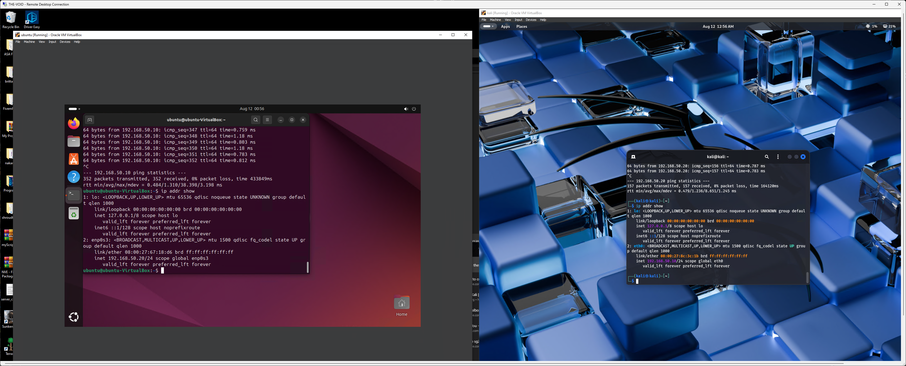

Day 1
Today I spent a good amount of time trying to get an Ubuntu VM working alongside a Kali VM so I can practice. I’m not entirely sure what I’ll be practicing yet — we’ll see. It was a bit of a hassle getting things going. It took a good portion of the day to get the VMs to work on the workstation, which I’ll refer to as the “server” since that’s how I use it. For now, though, it’s running Windows 10 Pro.
It turns out I needed to crank up the settings in each VM — RAM, processors, etc. After that, they worked, though a bit slowly. I suppose that’s asking a lot from the old workstation. Oh well, onward! Now I need to figure out how to link them together like they’re on a network so I can start learning.
 Screenshot of my PC, remoted into the server, running the VMs
Screenshot of my PC, remoted into the server, running the VMs
I decided to keep working a bit and managed to assign both VMs their own IP addresses! I even pinged each one from the other successfully.
 Ping test between the two VMs